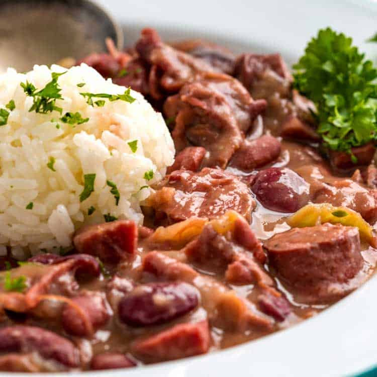
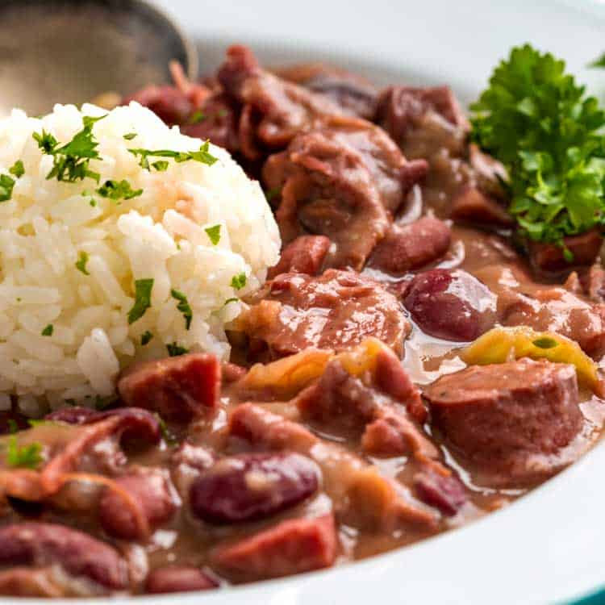

Ingredients:
- 1 cup rice
- 1 cup cooked beans (black beans, kidney beans, or chickpeas)
- 1 tablespoon cooking oil
- 1 small onion, chopped
- 1 garlic clove, minced
- 1 bell pepper, diced
- 1 teaspoon cumin
- 1 teaspoon paprika
- 2 cups vegetable or chicken broth
- Salt and pepper to taste
Instructions:
1. Rinse the rice and set aside.
2. Heat oil in a pot, sauté the onion and garlic until translucent.
3. Add the bell pepper and cook for a few minutes.
4. Stir in the cumin and paprika.
5. Add the rice and mix well.
6. Pour in the broth and bring to a boil.
7. Reduce heat to low, cover, and cook for 15 minutes or until the rice is tender and the broth is absorbed.
8. Gently stir in the cooked beans and heat through.
 
